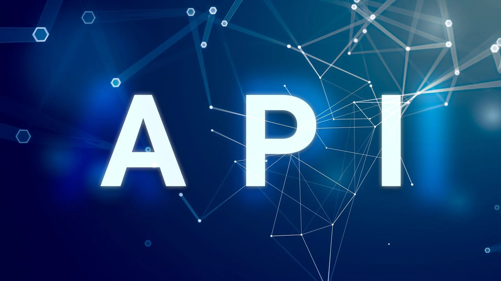

Будущее Веб-Разработки: Тенденции и Технологии, которые определят 2024 Год
Веб-разработка продолжает эволюционировать с бешеным темпом, а 2024 год обещает стать ещё одним годом инноваций и прорывов. От новых стандартов в дизайне до передовых технологий, эти тенденции и технологии определенно окажут значительное влияние на то, как мы разрабатываем и взаимодействуем с веб-сайтами.
Прогрессивные веб-приложения (PWA)
Прогрессивные веб-приложения продолжают набирать популярность, предлагая пользователям опыт, сопоставимый с нативными приложениями. Благодаря возможности работы офлайн, быстрой загрузке и доступу к аппаратным средствам устройства, PWA станут ещё более распространёнными, особенно в контексте мобильного интернета.
Использование искусственного интеллекта и машинного обучения
ИИ и машинное обучение всё чаще интегрируются в веб-разработку для персонализации пользовательского опыта. От чат-ботов, обеспечивающих поддержку в реальном времени, до алгоритмов, адаптирующих контент под интересы пользователя, эти технологии делают веб-сайты умнее и более вовлекающими.
API First Design
Подход "API First" становится нормой в разработке веб-приложений, поскольку компании стремятся обеспечить бесперебойную интеграцию своих сервисов с другими приложениями и устройствами. Этот подход подразумевает разработку API до начала работы над самим приложением, что облегчает расширение функциональности и сотрудничество с партнёрами.
Технологии статической генерации страниц (SSG)
Статическая генерация страниц возвращается, но на новом технологическом уровне. Современные инструменты, такие как Next.js и Nuxt, позволяют разработчикам создавать быстрые и безопасные веб-сайты, которые при этом легко индексируются поисковыми системами. Эта тенденция продолжит набирать обороты, поскольку все больше компаний стремятся улучшить производительность и SEO своих сайтов.
Улучшенная доступность
Вопросы доступности сайта (accessibility) будут занимать всё более важное место в веб-разработке. Создание сайтов, доступных для людей с ограниченными возможностями, не только расширяет аудиторию, но и повышает общее качество продукта. Использование ARIA-меток, семантического HTML и тестирование на доступность станут стандартной практикой.
2024 год обещает принести новые возможности и вызовы для профессионалов в области веб-разработки. Оставаясь в курсе этих тенденций, разработчики смогут создавать инновационные, эффективные и доступные веб-приложения, которые удовлетворяют потребности и ожидания современных пользователей.